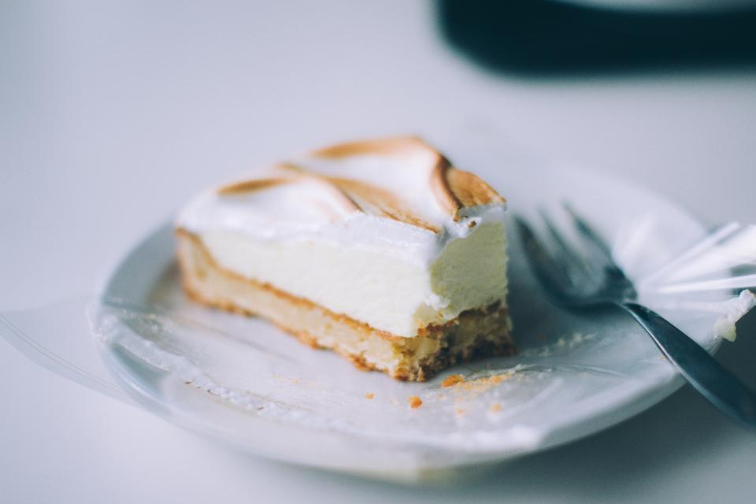

焼き菓子
フィナンシェ、スコーン、マフィン、タルト、パウンドケーキなど。素材の味わいを大切にした焼き菓子を取り揃えています。
千葉県市川市新田
外はカリッと、中はふわっと。一つひとつ丁寧に焼き上げた焼き菓子と、注文ごとに挽くハンドドリップコーヒーをご用意しています。
千葉県市川市新田 / 市川駅南口から徒歩5分
Google評価 4.5(口コミ72件)ABOUT
市川駅南口から徒歩5分、昔ながらの商店街の中に n COFFEE & BAKE はあります。フィナンシェやスコーン、マフィン、タルト、パウンドケーキなど、焼き菓子を中心に取り揃えている小さなお菓子屋兼カフェです。
店内は白を基調とした、落ち着いた雰囲気。イートインスペースもございますので、お買い物のあとに少し腰を落ち着けて、焼きたての香りとともにゆっくりお過ごしいただけます。
SIGNATURE
n COFFEE & BAKE の看板商品は、外側のカリッとした焼き色と、中のふわっと軽い食感が特徴のフィナンシェです。バターの風味は控えめに仕上げているため、しっとり濃厚というよりも、素材そのものの味わいを感じていただける軽やかな口当たりが魅力です。
この食感の対比が多くのお客様から高い評価をいただいており、アールグレイなど、いくつかの味をご用意していることもあります。
フィナンシェのほか、桜のパウンドケーキなど、季節ごとの焼き菓子をご用意することもございます。内容は時期によって変わりますので、詳しくはInstagramをご確認ください。
WEDNESDAY MORNING
毎週水曜日には、スコーンまたはマフィンに、スープとドリンクが付くモーニングセットをご用意しています。その日にお店にある種類の中からお選びいただけ、組み合わせは日によって変わります。
ゆっくり過ごしたい方は、比較的落ち着いている時間帯の来店がおすすめです。詳しい内容は、来店前にInstagramでご確認ください。
詳しくはInstagramでご確認くださいCOFFEE
n COFFEE & BAKE のコーヒーは、ご注文をいただいてから一杯ずつ豆を挽き、ハンドドリップで丁寧に淹れています。豆についてスタッフが説明することもあり、焼き菓子とあわせてゆっくりコーヒーの時間を楽しんでいただけます。
VISIT
店内は3テーブル・6席の小さなカフェスペースです。
イートインをご希望の場合は、この点をあらかじめご了承ください。
土日は混雑し、外でお待ちいただく場合があります。
ゆっくり過ごしたい方には、平日のご来店がおすすめです。
テイクアウトのご利用も多く、日常使いにも向いています。
近隣にお住まいの方にも、お気軽にお立ち寄りいただけます。
VOICE
Google評価 4.5(口コミ72件)
ご来店のお客様(1)
オープン直後に伺いましたが、フィナンシェがちょうど焼きたてで、食感も香りも最高でした。イートインでアイスコーヒーとくるみのタルトをいただきましたが、店員さんが丁寧にコーヒー豆について説明してくださいました。焼き菓子の甘さは控えめでちょうどよく、素材の美味しさを感じられました。
ご来店のお客様(2)
毎週水曜日限定のモーニングメニューを利用しました。店内は白を基調とした落ち着いた雰囲気です。イートインスペースは3テーブル(6席)なので、ゆっくり過ごしたい方はオープン直後の来店がおすすめです。モーニングはスコーンとマフィンから選べてスープとドリンクが付くセットで、この日はチョコバナナスコーン・ベーコンチーズスコーン・トマトバジルマフィンから選べました。コーヒーはハンドドリップで、注文ごとに豆を挽いていて、苦味もなくすっきり飲めました。店員さんの雰囲気も良く、おすすめできるお店です。
ご来店のお客様(3)
市川駅南口から徒歩5分、昔ながらの商店街にある小さなお菓子屋さんです。タルト、スコーン、フィナンシェ、パウンドケーキなど焼き菓子がメインで、店内の6席でイートインもできます。苺のタルトとアールグレイのフィナンシェ、アイスカフェラテをいただきましたが、フィナンシェは今まで食べたことのない食感でした。外側のカリッとした感じがすごく、中はふわっと柔らかい。バターの風味は控えめで、しっとりというよりふわっとした印象です。タルトの土台もサクサクで好みのバランスでした。桜のパウンドケーキもテイクアウトし、職場へのお土産にしました。
ご来店のお客様(4)
焼き菓子のクオリティが高く、本当に美味しいです。友人や家族にも好評でした。個人的にフィナンシェは「日本一」だと思っています。外はカリカリ、中はしっとりで幸せな気持ちになります。テイクアウトの利用が多いお店ですが、店内でも落ち着いて過ごせます。コーヒーも香りが良く美味しかったです。
ご来店のお客様(5)
市川駅から少し歩いたところにある、焼き菓子がとても美味しいお店です。近隣の方がテイクアウトで購入していくことが多そうな雰囲気でした。特にバターミルクスコーンとフィナンシェが好みで、よく買いに行っています。メニューは日替わりのようなので、Instagramのストーリーを確認してから伺うのがおすすめです。イートインも可能ですが、お店自体が小さく、テーブルが3つで各テーブルに椅子が2つという規模なので、座れないこともあるかもしれません。人気があるため土日はかなり混雑し、席が空くまで外で待つ可能性が高いです。平日は時間帯によってスムーズにイートインできることもあります。コーヒー系のメニューも充実していて、カフェラテやアメリカンをいただきましたが、こちらもとても美味しかったです。価格は他のカフェと大きく変わらず、焼き菓子とドリンクでおおよそ1,000〜1,500円程度だったと思います(お客様の声より)。店員さんも皆さん感じが良く、退店時に「お気をつけて」と声をかけてくださるのが印象的でした。
ACCESS
正確な地図表示は準備中です。
下のボタンからGoogleマップでお店の場所をご確認ください。
PHOTO SAMPLE(フリー素材によるイメージ写真)
